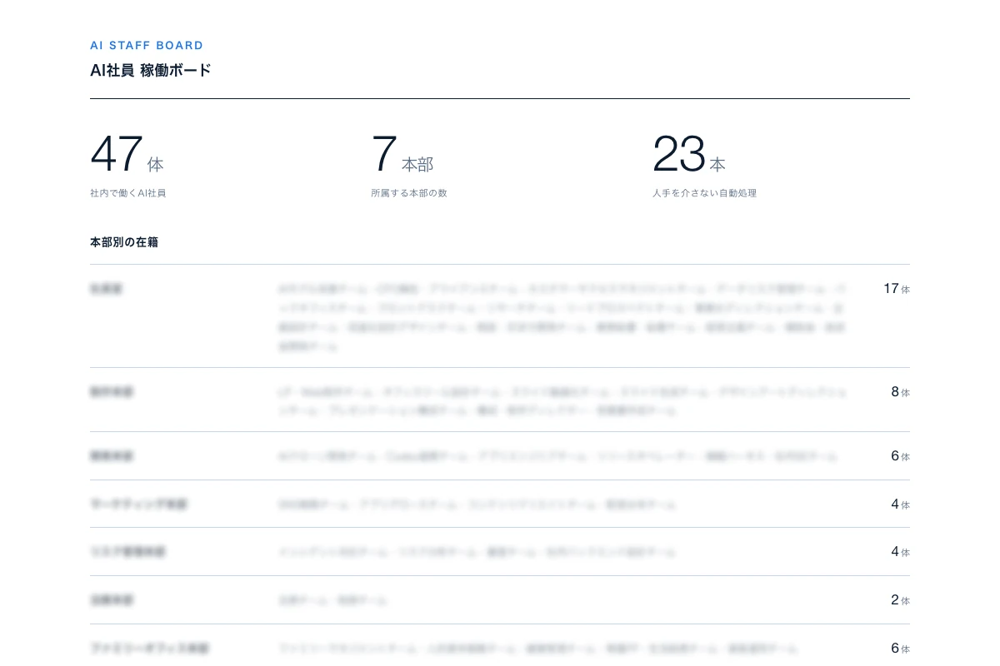

約10 日
制作開始から約10日で、App Storeに公開
2本目の自社アプリを、制作開始から約10日でApp Storeに公開しました。企画も、ストアの掲載文も、審査のやりとりも、全て社内で手を動かしています。
AIで、“人手”と“手間”を減らす。自社も“AI社員”で動かす実践者が、社長の「やってみたい」を、ちゃんと使える形にします。
株式会社タイガーラボは、中小企業向けのAI活用パートナーです。AIの導入・活用、業務の省力化、開発・制作を、20万円〜の明確な料金で全国オンライン支援します。自社の運営そのものを自社のAI（AI社員）で回している実践者が、最初の一歩から伴走します。
AIで、“人手”と“手間”を減らす。導入から仕組み化、開発・制作まで、まとめてご相談いただけます。
AI社長・社員のAI化
毎月の作業を仕組みに
LP・アプリ・社内ツール
自社の会社運営そのものを、AIで回している実践者です。ご自身で確かめられるものだけを載せています。
約10 日
2本目の自社アプリを、制作開始から約10日でApp Storeに公開しました。企画も、ストアの掲載文も、審査のやりとりも、全て社内で手を動かしています。
47 体
役割ごとの手順書を持つAI担当が社内に47体。経理も、調べものも、この会社サイトの更新も、同じ仕組みで動かしています。最後に決めるのは人、その手前を任せる形です。
1,000〜
複数の拠点をもつ組織で、雇用契約まわりの書類をまとめて自動作成しました。必要な情報を自動で集めて、そのまま出力するところまでを仕組みにしています。人が増えたときの追加分も、その都度自動で揃います。人事評価・シフト／勤怠の自動化と毎月の運用も、続けて支援しています。
約10日は自社開発アプリでの実績です。ご依頼いただく案件の期間をお約束するものではありません。書類の作成はお客様との守秘契約のため、社名・規模は伏せています。通数はお客様ごとに異なります。AI社員の体数は2026年8月時点の自社集計です。

いまの段階に合わせて選べる3つ。ここから、始めていきましょう。
ご相談はAI社員に限らず、AI導入・活用／業務の省力化／開発・制作のどれでも、いま一番困っているところ1つからお受けします。
費用も、掲載の料金に合わせていただく必要はありません。ご予算を伺って、その中でできることを一緒に決めます（例：AI社員を1体だけなら初期15万円＋月3万円から）。
1回だけでも大丈夫。しつこい営業はしません。オンラインで完結します。
パッケージ実装後、伴走支援の継続がおすすめです（価格は税別）。
株式会社タイガーラボは、中小企業向けのAI活用パートナーです。AI導入・活用／業務の省力化／開発・制作を、Light 20万円〜の明確な料金で、全国オンラインで支援します。自社の運営そのものを自社のAI（AI社員）で回している実践者です。料金・進め方・安全性など、よくいただくご質問にお答えします。
株式会社タイガーラボは、中小企業向けのAI活用パートナーです。ツールを渡して終わりにせず、成果につながる形まで一緒に整えます。自社の運営そのものを自社のAI（AI社員）で回している実践者で、全国オンライン対応です。
支援は大きく3つです。①AI導入・活用（AI活用診断／実践AI研修／AI顧問）、②業務の省力化（AI社長／定型業務の仕組み化／業務ツール利用の効率化）、③開発・制作（Web・LP／業務システム／アプリ）。何から手をつければという段階からご相談いただけます。
目的に合わせた3つのパッケージがあります（いずれも税別）。Light 20万円〜（まずは試す）、Standard 60万円〜（ひと通り整える）、Full 120万円〜（まるごと任せる）。パッケージは単発（1回ごと）が基本で長期の縛りはなく、まず1回だけ試せます。個人事業主・小規模の会社の方は、掲載の料金に合わせていただく必要はありません。ご予算を伺って、その中でできることを一緒に決めます。詳しいお見積りは無料相談で承ります。
目安として、まず試したいならLight、自動化やサイトまで欲しいならStandard、分身AIや開発まで一気に進めたいならFullです。最適なプランはお困りごと次第で変わるため、無料相談で作業を伺い、優先順位をつけてご提案します。
個人事業主・小規模の会社も歓迎です。人数が少ないほど一人あたりの事務負担は重くなりがちで、AI・自動化の効果を感じやすいです。ご相談はAI社員に限らず、AI導入・活用／業務の省力化／開発・制作のどれでも、いま一番困っているところ1つから承ります。費用も掲載の料金に合わせていただく必要はなく、ご予算を伺って、その中でできることを一緒に決めます（例：AI社員を1体だけなら初期15万円＋月3万円から）。
ツールを渡すだけならご自身でも始められます。タイガーラボの価値はその先で、①御社の課題を見える化し、②合う使い方・仕組みを設計し、③教材＋使い方の動画まで、ひと通り用意します。自社の運営をAIで回している実践者として、導入したのに形だけになる落とし穴も踏まえて支援します。
AI導入がつまずくのは、目的が曖昧・現場を巻き込めていない・最初から完璧を狙う場合が多いです。そこで最初に目的と指標を握り、現場を巻き込み、小さく始めて効果を確かめながら広げます。いきなり作り込まないため、やってみたけれど無駄だった、になりにくい進め方です。なお、国内のAI・デジタル活用の動向は、総務省の情報通信白書でも公表されています。
導入して終わりにはせず、導入後のフォローアップまで対応します。実践AI研修では教材＋使い方の動画をお渡しし、従業員が使いたいけれど使えない状態にならないようにします。使い方や仕組みが手元に残り、困ったときの相談導線もご用意しています。
おおまかに5つのステップで進みます。①ヒアリング→②分析（AIで効率化できる所を見える化）→③提案（合うプランを優先順位つきで）→④導入（設定・構築・研修まで）→⑤フォローアップ。最初のヒアリングは無料相談から承ります。
業務で使う場合は、入力内容がAIの学習に使われない設定・プランを前提に組み立てます。法人向けの利用では入力内容が学習に回らない形が基本です。そのうえで扱う情報の範囲も一緒に決め、機密情報の扱い・アクセスできる範囲・成果物の管理方法を最初に取り決めてから進めます。
守秘のため一部は匿名になりますが、たとえば次のような実績があります。自社開発アプリを、制作開始から約10日でApp Storeに公開し、いまも配信中です（企画・ストア掲載文・審査のやりとり・公開後の運用まで社内で対応）。複数の拠点をもつ組織では、雇用契約まわりの書類をまとめて自動作成し、人事評価・シフト／勤怠の自動化と毎月の運用まで続けて支援しています。自社の運営そのものも、役割ごとの手順書を持つAI社員47体で回しています。
全国オンライン対応です。所在地を問わずご依頼いただけ、ご相談・ヒアリングから研修・導入までオンラインで完結します。移動の負担がないぶん、気軽に始めていただけます。
AI・ITツールの導入には、国の「デジタル化・AI導入補助金」（旧・IT導入補助金）などの公的な補助制度を利用できる場合があります。対象・補助率・募集の時期は年度ごとに変わりますので、最新は運営元（独立行政法人中小企業基盤整備機構）の公式サイトでご確認ください。弊社は補助金申請の代行は行いませんが、補助の対象になりそうかの見極めや、補助を意識したツール選びのご相談には対応いたします。